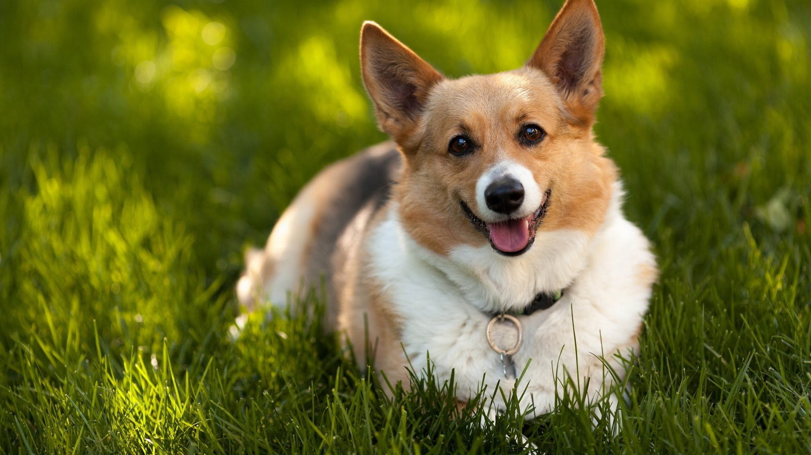

Нос собаки как отпечаток пальца
У каждой собаки он уникален. Аналогично нашим отпечаткам пальцев, отпечаток носа собаки служит методом его идентификации.
ЧитатьУсы кошек – источник информации о питомце

Усы кошек помогают им ориентироваться в пространстве, а также отражают их настроение. В следующий раз, когда вы будете наблюдать за своим котом, обратите внимание на его усы – они могут много рассказать о его чувствах.
ЧитатьСобаки понимают наши эмоции
Это не просто выдумка. Они действительно понимают, когда вы рады, грустны или встревожены. Питомцы чувствуют наши эмоции и реагируют на них, всегда готовы поддержать своим теплом и лаской.
Читать